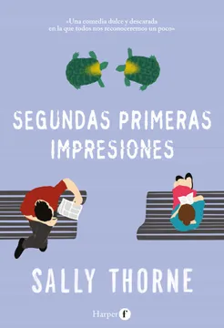

Segundas primeras impresiones
- 
- Título en inglés: Second first impressions
- Autor: Sally Thorne
- Fecha de publicación original: 31 de marzo de 2021
Sinopsis
Segundas primeras impresiones es el esperado regreso de la autora de Cariño, cuánto te odio que nos vuelve a sorprender con una comedia romántica en la que no todo es lo que parece y demuestra lo importante de las nuevas oportunidades.
Ruthie Midona lleva años trabajando en la administración del complejo Providence, a la entera disposición de los adinerados residentes y de las especies raras de tortugas que rondan por el impecable césped. Sigue una rutina sin apenas cambios. Hasta que conoce a Teddy Prescott, el hijo del nuevo propietario de Providence, y su nuevo vecino. Alto, tatuado y con el pelo más maravilloso del mundo, Teddy está ahorrando para hacer realidad su sueño de abrir un salón de tatuajes. Es la definición personificada del riesgo, y deja deslumbrada a Ruthie a primera vista? hasta que la confunde con una ancianita.
Ruthie descubre la forma perfecta de vengarse de Teddy y su insultante primera impresión: las residentes más excéntricas acaban de poner un anuncio (¡sí, otro!) en busca de un ayudante personal a quien atormentar. Las Parloni tienen noventa años, son unas pequeñas amenazas andantes y ninguno de sus ayudantes ha durado ni una semana. Ruthie reconoce a un pusilánime en cuanto lo ve y está más que dispuesta a ofrecerles a Teddy. Para sorpresa de Ruthie, Teddy demuestra ser el empleado definitivo y despliega su encanto por toda la villa, incluido el corazón de Ruthie, llenándolo con su visión chispeante, nunca seria, de la vida. Pero con el futuro de Providence pendiendo de un hilo y los planes de la familia de Teddy amenazando con destruir el pequeño universo de Ruthie, ¿estará Teddy ahí cuando más lo necesite?
/5
Primeras, segundas impresiones de Sally Thorne fue una verdadera sorpresa y, sin duda, una lectura que amé en todo sentido. Lo leí como parte de la lectura conjunta del RainbowClub, y a diferencia de la experiencia anterior que me había dejado un sabor amargo, esta vez decidí empezar con expectativas bajas. Afortunadamente, desde el primer capítulo el libro me atrapó por completo.
La historia sigue a Ruthie, una joven tímida, estructurada y con una vida rutinaria, que lleva años trabajando en una residencia para adultos mayores adinerados. Su mundo, predecible y controlado, da un giro inesperado con la llegada de Teddy Prescott, un joven encantador, de cabello largo y aire de chico rebelde, que irrumpe en su vida tranquila con una energía completamente opuesta. Teddy es, además, el hijo del nuevo dueño de la residencia y, para colmo, su nuevo vecino.
Cuando Ruthie intenta vengarse de la primera y desastrosa impresión que Teddy le deja, decide sugerirlo como ayudante de las hermanas Parloni: dos mujeres nonagenarias, excéntricas, traviesas y absolutamente adorables, que han hecho de despedir asistentes todo un arte. Esta situación da pie a una historia que mezcla romance, humor y crecimiento personal de forma muy ágil y entretenida.
La relación entre Ruthie y Teddy se va desarrollando en un entorno que, aunque lleno de excentricidades, permite reflexionar sobre temas como el miedo al cambio, la autoaceptación y el valor de salir de la zona de confort. A destacar también la intervención de Melanie, la amiga y compañera de trabajo de Ruthie, quien cumple un papel clave en empujarla a abrirse al mundo.
Leí este libro en un fin de semana y no me arrepiento de nada. Es una historia ligera, entrañable, con personajes bien construidos y secundarios memorables, especialmente las hermanas Parloni, que le aportan una chispa deliciosa a cada capítulo en el que aparecen.
Si bien disfruté muchísimo del personaje de Teddy –una verdadera green flag, casi demasiado perfecto para ser real–, sí sentí que aceptaba demasiados rechazos por parte de Ruthie, y en la vida real ningún hombre aceptaría esto sin mostrar ni un poco de orgullo. Además, el cierre de su conflicto familiar me pareció algo apresurado. El perdón de su hermana, el cambio repentino en la actitud del padre y ese supuesto símbolo de madurez que es cortarse el pelo se sintieron algo forzados, considerando la intensidad de los problemas previos.
Aun así, no le quito mérito. Le doy cinco estrellas porque es una lectura reconfortante, con grandes momentos, personajes que se quedan contigo y mensajes importantes sobre el amor propio, el apoyo de quienes te rodean y la importancia de sanar, incluso cuando eso implica alejarse de quienes más deberían haberte cuidado.
/5
Primer libro de Sally Thorne que leo y… ¿quién no quiere un romance entre una chica de 25 años que parece tener 80 en el cuerpo y alma, y un tatuado hijo rebelde del dueño que llega a revolucionar su vida?
Ruthie es básicamente una abuelita atrapada en un cuerpo joven, con ansiedad y miedo a arruinarlo todo (soy), y Teddy es ese tipo encantador que parece un desastre con patas, pero que, ¡sorpresa! respeta y adora a Ruthie como si fuera la última tortuga en la tierra (y sí, hay tortugas, porque este libro tiene todo ese encanto inesperado que no tenía idea que necesitaba). La dinámica entre ellos es tan dulce y natural que casi me olvidé de que la historia suena a la idea más rara para un romance contemporáneo.
Sin embargo, lo que realmente se llevó el show fueron estas señoras, ricas, que literal son pequeñas amenazas andantes y que hacen que cada escena sea una joyita. Además, tremenda revelación sacaron al final, quedé en shock.
¬øDrama? S√≠, pero con justa raz√≥n. ¬øRomance? Absolutamente adorable, con un Teddy que es el tipo de hombre (literario) que me hizo suspirar y querer hacerle nanai. Lo único que me hizo ruido fue la rápida resoluci√≥n del conflicto que ten√≠a Teddy con su hermana. Pero s√≠, lo admito, termin√© ultra feliz, porque Teddy se cort√≥ el pelo üòÇüòÇüòÇ, mentira, fue que este libro es justo un romance tierno y divertido que me revivi√≥ despu√©s de Slow Dance.
/5
Divertida y ligera, con personajes entrañables. Ruthie es una protagonista dulce, marcada por sus inseguridades y la falta de apoyo en su adolescencia. Teddy es muy carismático, pero también arrogante; durante buena parte del libro no terminó de gustarme, aunque logra mostrar un lado vulnerable que lo hace querible. Tiene un trasfondo interesante y una “conversión” a raíz de su relación con Ruthie: un buen personaje masculino escrito por una mujer.
Melanie y su “método Sasaki” son clave para que Ruthie empiece a reconocerse, a descubrir quién es y qué quiere, con la ayuda de ambos (Teddy y Melanie). La química entre Ruthie y Teddy existe, aunque algunas escenas pueden sentirse algo forzadas. Las residentes Parloni se roban varias páginas con su excentricidad, y el giro final relacionado con ellas es inesperado.
El final se siente un poco apresurado, especialmente en el cierre de la historia y la reconciliación de Teddy con su familia, que resulta poco creíble. Aun así, es un romance rápido de leer y entretenido, ideal para quienes disfrutan de las comedias románticas con un toque peculiar.